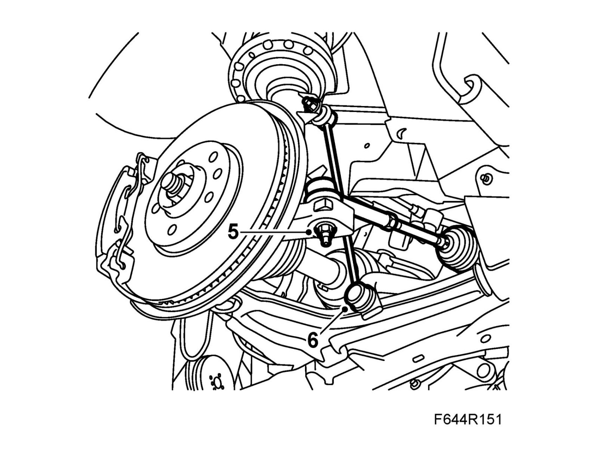
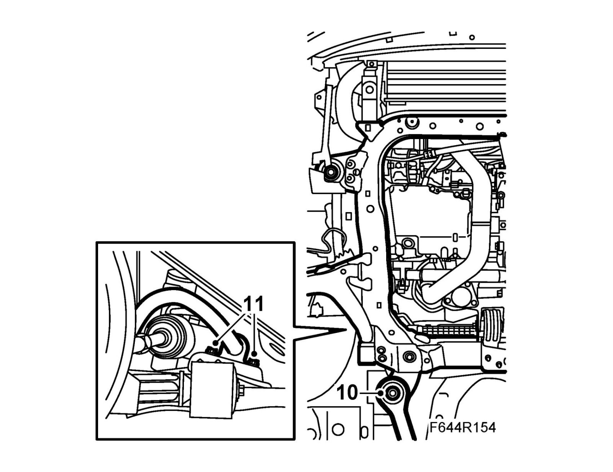
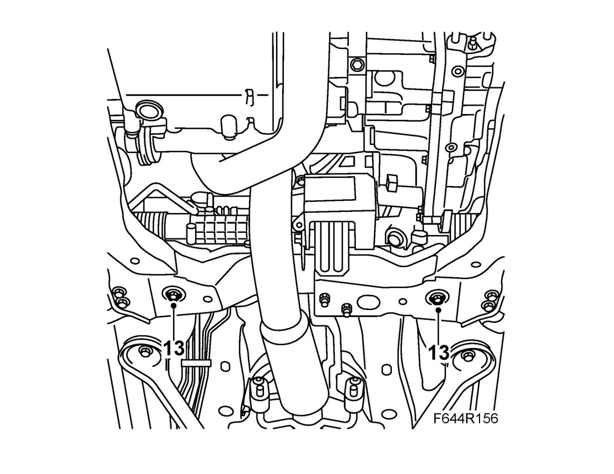
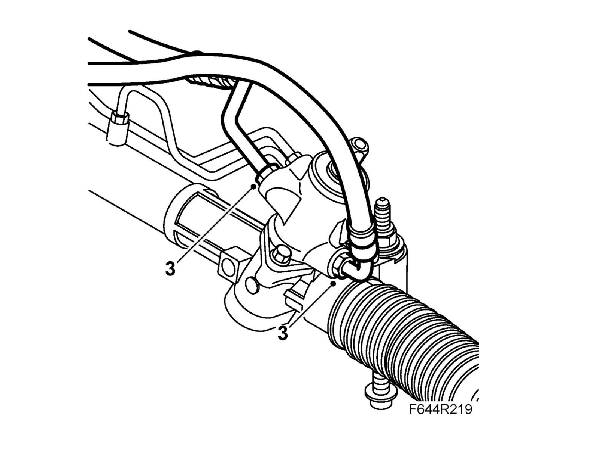
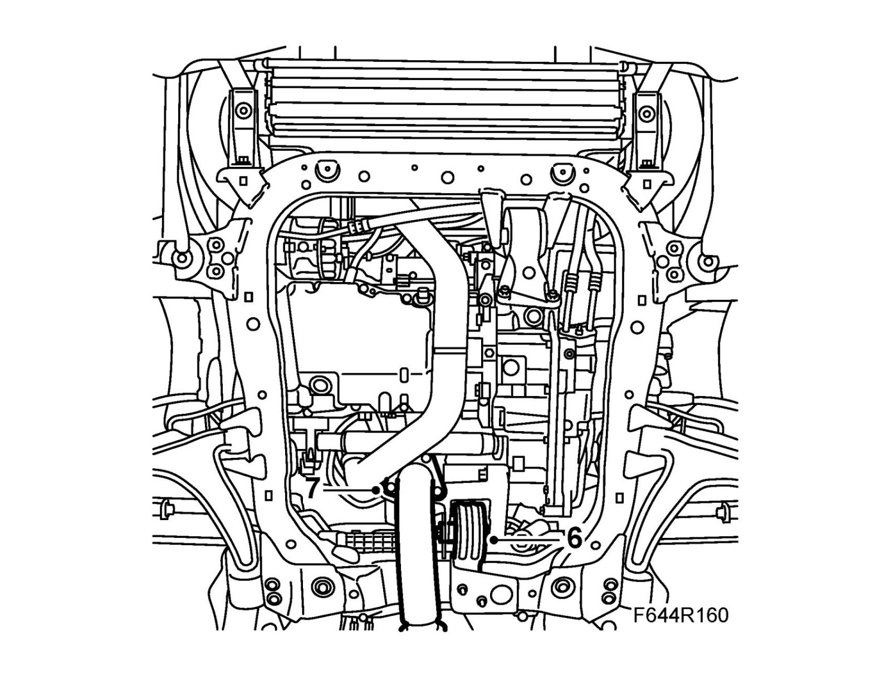
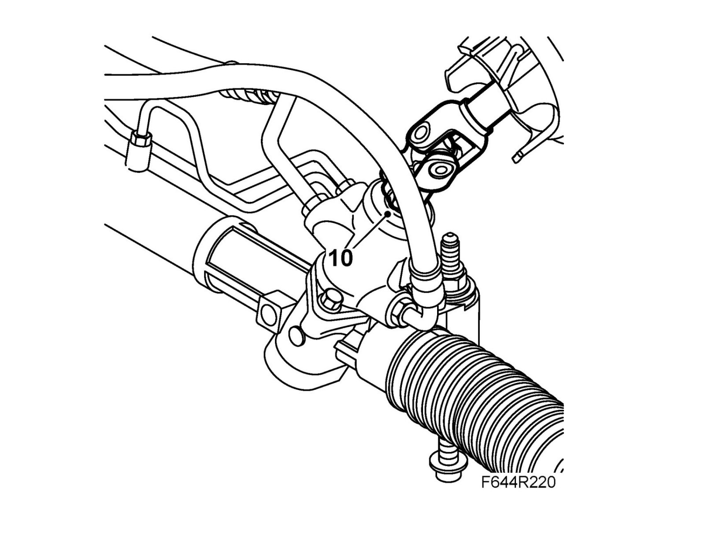

Steering Gear: Service and Repair
Steering gear, B207 LHDImportant
Scrupulous cleanliness must always be observed during all work with hydraulic components.
Important
Always use wing covers when working in the engine bay.
To remove
1. Clamp the return hose using 30 07 739 Hose pinch-off pliers.
2. Position the wheels and steering wheel straight ahead. Fix the steering wheel to the dashboard with woven tape or lock it with the steering wheel lock.
3. Raise the car.
4. Remove the front wheels.
CV: Remove Chassis reinforcement, front subframe, CV.
5. Remove the nuts securing the track rod ends to the steering swivel members.
Remove the track rod using 87 91 287 Puller, 150 mm.

6. Remove the anti-roll bar links from the anti-roll bar. Hold with a thin 17 mm open wrench so that the ball joint does not turn.
7. Remove the steering shaft joint from the steering gear.
8. Remove the exhaust pipe flange and front exhaust pipe mounting. Relieve the load on the flex membrane using 83 95 212 Strap.
9. Remove the rear torque rod bolt.
10. Use a column jack to relieve the load on the subframe. Remove the rear bolts and rod.

11. Remove the anti-roll bar mountings from the subframe.
12. Place a receptacle under the car. Detach the delivery line and the return line from the steering gear. Plug the lines.
13. Remove the steering gear bolts, nuts and washers.

14. Raise the anti-roll bar as high as possible and lift out the steering gear through the wheel housing on the left side.
To fit
1. Lift the steering gear into place through the wheel housing on the left side.
2. Fit the steering gear to the subframe.
Tightening torque 50 Nm +60° (37 lbf ft +60°)
3. Fit the delivery line and return line to the steering gear. Fit new O-rings.
Tightening torque 28 Nm (21 lbf ft)

4. Fit the anti-roll bar to the subframe.
Tightening torque: 18 Nm (14 lbf ft)
5. Raise the subframe using 83 95 311 Trolley lift with 83 94 801 Parent fixture and 83 96 137 Centering tool, subframe - body. Fit the tool against the guide holes in the body. Fit the rods and tighten the bolts.
Tightening torques
Subframe: 75 Nm + 135° (55 lbf ft + 135°)
Torque rod: 90 Nm + 45° (67 lbf ft + 45°)
6. Fit the screw on the torque rod.
Tightening torque: 80 Nm (59 lbf ft)

7. Fit the exhaust pipe flange and exhaust pipe mountings.
Tightening torque 30 Nm (22 lbf ft)
8. Fit the anti-roll bar links to the anti-roll bar. Hold with a thin 17 mm open wrench so that the ball joint does not turn.
Tightening torque 64 Nm (47 lbf ft)
9. Fit the track rod ends to the steering swivel members.
Tightening torque 35 Nm (26 lbf ft)
10. Fit the steering shaft joint to the steering gear. Clean the threads and apply Threadlock, Loctite 242 to the threads.
Tightening torque 30 Nm (22 lbf ft)
Warning
Check that the bolt fits into the groove on the pinion shaft.

11. CV: Fit Chassis reinforcement, front subframe, CV.
12. Wipe clean the subframe from any oil.
13. Lower the car to the floor.
14. Refit the wheels.
15. Remove the hose pinch-off pliers and fill with power steering fluid.
16. Remove the tape or other means used to prevent the steering wheel from moving.
17. Bleed the power steering system and check for leaks.
18. Carry out a wheel alignment.